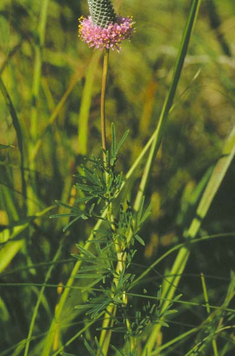
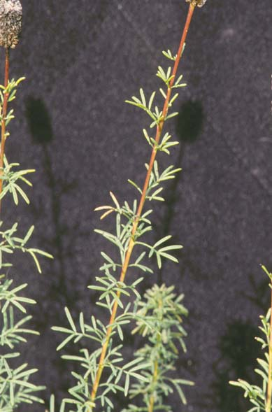
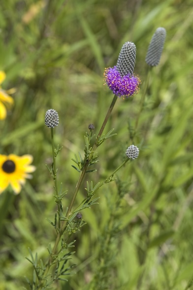

Dalea purpurea
Family: Fabaceae
Purple Prairie Clover
Swink/Wilhelm #9


FLOWERING: Early July to early August
SEED TIMING: September
HABITAT: Dry to mesic prairie
DIAGNOSTIC FEATURES: 1 - 3 feet high. Many stems grow from a single base. Leaves are divided into 3 - 5 narrow leaflets which may be sparingly hairy. Flowers are pinkish-purple on elongated spikes; blooming from bottom of spike upwards.
TO PICK: Ripe seed heads turn gray-black and are crumbly. The stem turns brown. Pick the entire head.